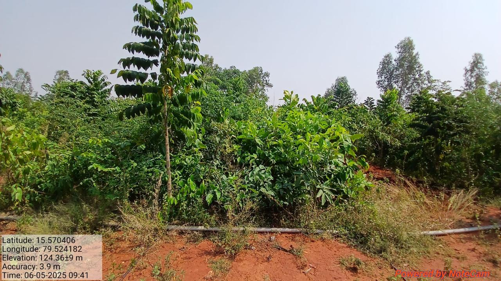
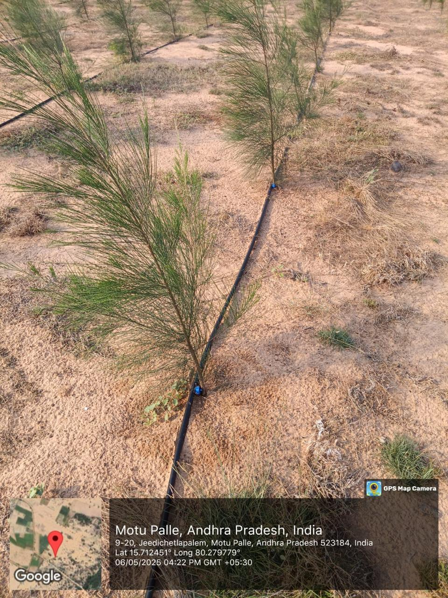
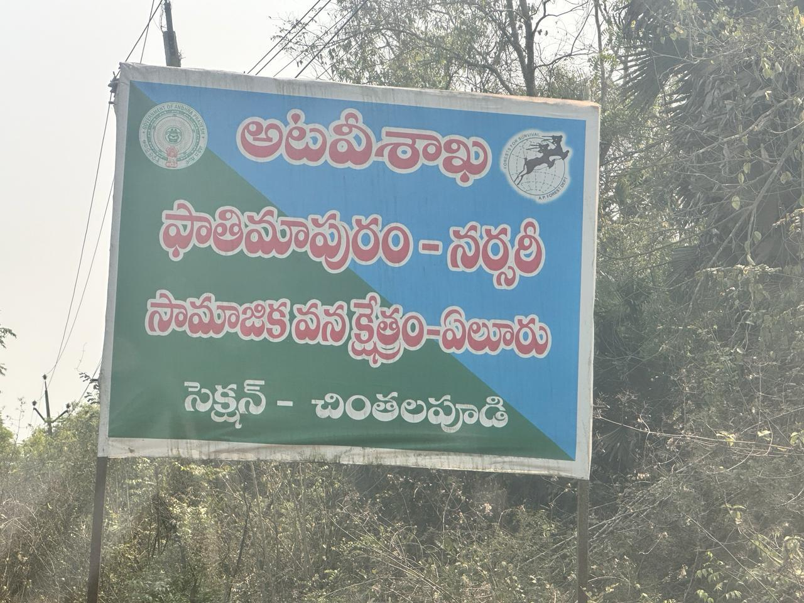

We turn open land into forest —
and keep every sapling alive.
Across Andhra Pradesh we restore reserve forests, eco-tourism parks and urban forests — then stay long enough to see them survive. 2,14,667 native saplings across 297 acres. 100% survival recorded.
Three kinds of forest.
One standard of care.

Reserve ForestReserve Forest & Afforestation
Open, degraded forest land brought back with dense native planting — surveyed, fenced, planted and monitored until the forest is self-sustaining.

Eco-Tourism ParkEco-Tourism Park Greening
Public parks transformed into walk-in forests — durable tree cover that survives footfall and gives communities a living green space to return to.

Urban ForestUrban Forest · Nagaravanam
Dense urban forests planted close to where people live — green lungs under the Nagaravanam model, restoring biodiversity at the city edge.
Planted to survive.
Not just to count.
Most plantation drives measure success at planting day. We measure it years later, when the forest is still standing. Our site register is public, our survival data is verified on-ground, and we don't leave until the trees can stand on their own.
Our storyFrom open land to living forest
in four steps.
Site Survey & Assessment
Every site is walked, soil-tested and mapped before a single sapling is ordered. We only take on ground we know we can restore.
Native Species Selection
Only native, site-suited species — raised in-nursery to plantable size. No wildcards, no ornamentals, no monoculture.
Monsoon Planting
Pitting, soil work and protective fencing — then planting timed precisely to the monsoon for maximum establishment success.
Multi-Year Monitoring
We maintain and monitor through the vulnerable early years — replacing losses, recording survival, staying until the forest is established.
What a forest-first NGO looks like.
Survival-First
Success means a living forest, not a planting event. We track survival on every site and stay until the numbers are confirmed on-ground.
Radical Transparency
Every site has a public register entry — name, location, area, species count and survival figure. Nothing is hidden or invented.
Native Species Only
We plant what belongs. No fast-growing exotics, no monocultures. Only species native to each site's specific ecosystem and soil type.
CSR-Ready Reporting
As a Section 8 organisation, we deliver the documentation that corporate CSR programmes need — with no invented claims or unverified numbers.
Fund forests you can point to.
As a Section 8 implementation partner, we deliver, document and monitor greening projects on behalf of corporate CSR programmes and forest agencies — with a site register that makes reporting straightforward.
Start a CSR conversationOur partners
Partner logos shown once approved — none shown until real.
Ready to plant something that survives?
Whether you're a CSR programme, a forest agency, or a community with degraded land — start with a conversation.
Partner with us
Implement a CSR greening project or agency restoration programme with full site documentation.
Start a project →Explore our work
Browse all nine plantation sites with survival data, locations and detailed case studies.
View site register →Verify our credentials
Section 8 licence, CIN, certifications — everything you need to due-diligence our work.
About us →